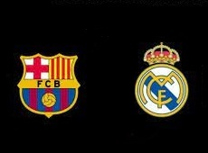
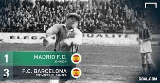
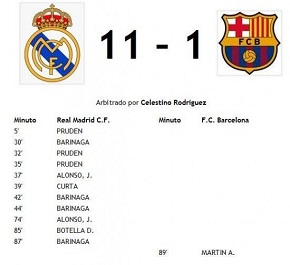
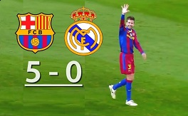
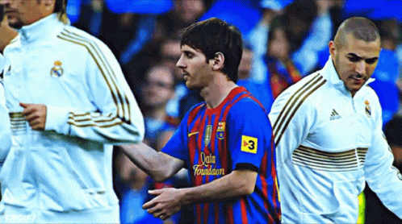
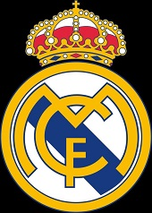
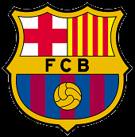

ＦＣ ＢＡＲＣＥＬＯＮＡ 🆅🆂 ＲＥＡＬ ＭＡＤＲＩＤ

¡ʟᴀ ᴍᴇᴊᴏʀ ʀɪᴠᴀʟɪᴅᴀᴅ ᴀ ɴɪᴠᴇʟ ꜰᴜᴛʙᴏʟɪꜱᴛɪᴄᴏ!
El clásico
El clásico español, conocido entre los medios de comunicación y los aficionados como "El Clásico", es el partido de fútbol que enfrenta al Real Madrid Club de Fútbol y al Fútbol Club Barcelona. Su relevancia ha crecido hasta convertirse en la rivalidad futbolística y/o deportiva más importante del ámbito español, situándose también como el encuentro entre clubes más seguido mundialmente del citado deporte, con aproximadamente 650 millones de espectadores de media entre 2012 y 2020
¿Cuándo fue el primer clásico?
El 13 de mayo de 1902, martes, y ante nada menos que unos 2.000 espectadores, fue el día en el que se disputó el primer duelo entre Madrid y Barça

Las mayores goleadas en "El clásico" por parte del Madrid y el Barcelona
Por parte del Real Madrid: El Real Madrid es el 'disfruta' de la mayor goleada en la historia de los Clásicos. En el año 1943, el conjunto blanco le endosó a su eterno rival un abultado 11-1 al Barça para remontar la eliminatoria de Copa (3-0 en la ida) y acceder a la final.

Por parte del FC Barcelona: El Barcelona destruyó el mito de 'Mou' hasta el ridículo (5-0) con una lección de fútbol desde el minuto uno al noventa. Una 'manita' totalmente imprevisible, pero incontestable como hacía tiempo que no se veía en un Barça-Madrid. El partido duró 18 minutos.

La rivalidad Messi-Cristiano (en los clásicos)
Leo Messi disputó 45 encuentros, por 30 de CR7. El primero del argentino fue en 2005, mientras que el estreno del portugués fue en 2009. El que más victorias logró fue Messi, con 19, por tan solo ocho del luso. Así las cosas el primero se llevó el 42% de los duelos y el segundo solo el 27%
Estadisticas:
PARTIDOS: Messi (37) 𐌠 Cristiano Ronaldo (29)
VICTORIAS: Messi (12) 𐌠 Cristiano Ronaldo (7)
EMPATES: Messi (8) 𐌠 Cristiano Ronaldo (6)
DERROTAS: Messi (12) 𐌠 Cristiano Ronaldo (14)
GOLES: Messi (25) 𐌠 Cristiano Ronaldo (17)
ASISTENCIAS: Messi (11) 𐌠 Cristiano Ronaldo (1)
BALONES DE ORO: Messi (7) 𐌠 Cristiano Ronaldo (5)
PRIMER CLASICO: Messi (19-11-2005) 𐌠 Cristiano Ronaldo (29-11-2009)

Maximos goleadores en la historia del FC Barcelona y el Real Madrid
ＲＥＡＬ ＭＡＤＲＩＤ

1)Cristiano Ronaldo (450 goles)
2)Karim Benzema (329 goles)
3)Raúl Gonzales (323 goles)
ＦＣ ＢＡＲＣＥＬＯＮＡ

1)Lionel Messi (672 goles)
2)César Rodríguez (230 goles)
3)Luis Suarez (198 goles)
En conclusión Messi ha sido ampliamente superior a Cristiano Ronaldo en "Los clásicos"
VISCA EL BARSA Y AGUANTE MESSI

hecho por luis